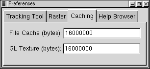

Preferences Dialog
Tracking Tool
The tracking tool preferences are used to control the types of information
displayed by the tracking tool. This is the display area at the bottom
of the Main OpenEV Window that shows
information about the location pointed to by the cursor in the window.
Coordinate: Possible values are:
- Off: Do not show the cursor position in the tracking area.
- Raster Pixel/Line: Show the pixel/line (column/row) location of the
cursor on the top most raster layer under the cursor.
- Georeferenced: Show the cursor position in the current coordinate
system of the view (which could be pixel/line, UTM, lat/long, etc).
- Geodetic (lat/long): Show the cursor position in geodetic (lat/long)
coordinates if possible. If not possible this will operate the same as
Georeferenced.
Lat/Long Format: Determins the format to display Lat/Long values for the
tracking tool. Possible formats are:
- ddd:mm:ss.ss Degree Minute Second notation
- ddd.ddddddd Degrees to seven decimal places
Pixel Value: Determines whether the tracker should report the top
most raster layers pixel value under the cursor. Note that fetching the
pixel value can be expensive for some organizations of raster file, and thus
can slow down interactive performance.
Display Georeferencing:
Determines whether views loaded with a raster image should operate in
georeferenced coordinates for that raster, or in raw pixel/line. A few points
of note:
- The tracking tool can report georeferenced, or geodetic coordinates even
if the view is drawn in pixel/line coordinates.
- The coordinate system of any vector layers must match the coordinate
system of the view in order for the vectors to correctly overlay displayed
rasters. Thus, only use No if vectors to be overlayed are in pixel/line
coordinates, or yes, if they are in the georeferencing system of the raster.
- If the raster has GCPs, but no affine transformation, the raster will
be given a first, or second order warp (depending on the number of GCPs) in
order to display the raster in the projection of the GCPs. This can be
fairly inappropriate for raw scenes with lat/long GCPs (such as most CEOS
scenes).
Overview Sampling:
Determines the sampling method to use when downsampling rasters for displays
of overview images. Note that the sample method is a property of a raster,
and is established at the point the raster is first displayed in a given
OpenEV session based on the preferences. Changing this preference will only
affect subsequently opened rasters.
- Average: Average all the pixels contributing to an overview
pixel.
- Decimate: Just take one of the source pixels when computing
an overview layer (the top left).
Decimation is the default, as it is less computationally expensive and
gives more appropriate results when viewing complex phase images.
Averaging can give much more viewable results for noisy data such as radar
images. However, it makes loading overviews of large images without
pre-computed overviews much more expensive because data must always be
loaded at full resolution and averaged down to display resolution on the
fly, whereas decimated displays often only need to load a small portion of
the total available scanlines in order to compute the decimated display.
Subpixel Interpolation:
Determines how a pixel is displayed close-up.
- Bilinear: The display intensity within a pixel varies from
its center to its edges, based on the values of surrounding pixels.
- Off (Nearest): The display intensity within a pixel is
constant.
Autoscaling Method:
Determines the method used to scale an image.
- Percent Tail Trim: The intensity mapping is based on the
minimum and maximum sorted data values with a user-defined percentage
of the highest and lowest values not included.
- Standard Deviations: The intensity mapping is based on the
mean data value plus/minus a user-defined number of standard deviations.
Caching
Caching issues are covered in more detail in the
Performance Tuning page.

File Cache: Number of bytes of memory available for caching raw raster
data from disk.
GL Texture: Number of bytes of video or system memory available
for caching image texturse.
Help Browser
This tab is unavailable on Windows where the system default web/html browser
is automatically used.
Enter a command to be used to display a web page containing help (such as
this one). If the command includes the value "%s" then the name of the file
or URL to display will be substituted for the %s. Otherwise it will be
appended to the command. By default OpenEV attempts to find one of a few
common web browsers.
To test a newly entered value, go to the main view window help menu and
select a topic, or hit F1 over the preferences panel, after clicking
outside the text box.